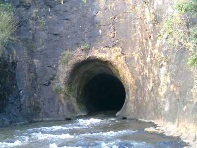
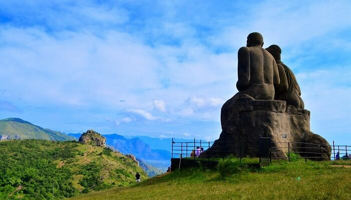
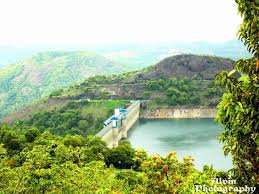
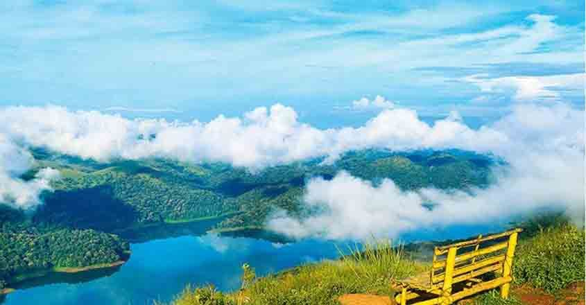
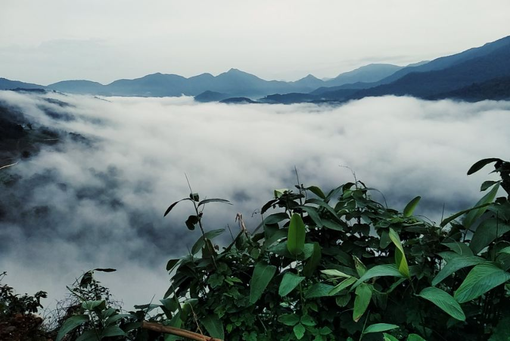

Home
(current)
Explore
Districts
Adventure
Holiday Packages
Cusines
Heritage
The Wild
Reviews
Destination
WaterFalls
Beaches
Museum
Contact Us
Sign In
Search
IDUKKI
A landlocked district, Idukki is one of the most nature rich areas of Kerala. High ranges and wooded valleys are girded by three main rivers – Periyar, Thalayar and Thodupuzhayar – and their tributaries. The River Pamba also has its origin here. As a tourist destination, Idukki offers diverse attractions like Wildlife sancturies, Hill stations, Dams, Spece plantation tours, Mountain treks, Elephant rides etc.
How to Reach:
Bus
KSRTC, as well as Private run buses, operate on the routes of this district embarked on the western ghats of Kerela.
Train
The nearest railway station is in Kottayam tucked 114 km away from the district.
Flight
The closest airport is in Cochin which is about 98 km away. Taxis and buses are easily available from Cochin to Idukki.
Places to Visit
Hill View Park:
With spectacular views of the Cheruthoni and Idukki Dams, the Hill-view Park serves as a famous tourist destination of Idukki. One can also spot diverse wildlife in its belt natural habitat.
Kulamavu Dam:
If you're a hiking or trekking junkie, Kulamavu is a hill-station that offers the perfect terrain for an adrenaline kick. With some amazing trekking trails, the place is also adorned with equally enchanting surroundings.
Anakara:
A small village in the Idukki district, Anakarra is just about 50 sq. km in area. Situated approximately 18 km from Idduki wildlife sanctuary on the Kumily-Munnar state highway, this place is famous for its spice plantations and picturesque waterfalls.
Nandukani:
Another hill station situated 25 km from Idukki, Nadukani offers a bewitching view of the mountains, Muvattupuzha River- a unique place in Kerala where three rivers meet, and many rare species of fauna are also found here.
Things to do
Historical Tour:
Dotted with an array of historical landmarks, Ernakulam is a primal destination to revisit and rewind history. Mattan Cherry Palace, Dutch Cemetery, Edappally Church, Chinese Fishing Nets, and other such spots are the spots that will serve your purpose in Ernakulam.
Jeep Safari:
For the leisure and fun seekers, this cosmopolitan serves as an ideal destination. Its pictorial beaches are known to be tourist-friendly, calm, and also offers an ample of fun-filled activities to the visitors.
Trekking:
Visitors can avail many activities including trekking, paragliding, mountaineering and rock climbing.
Gallery




